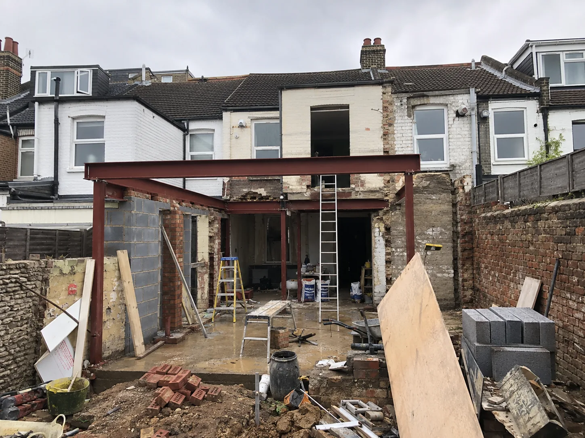
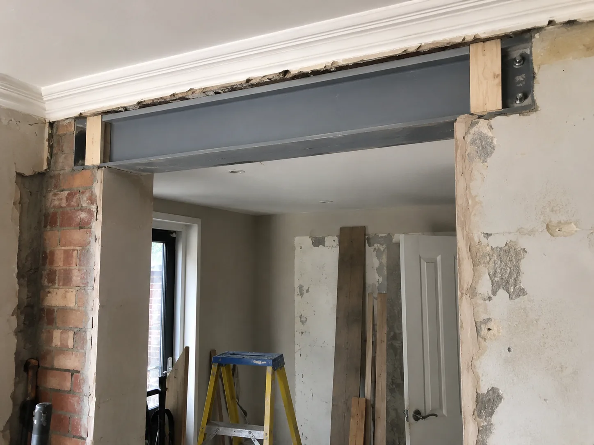
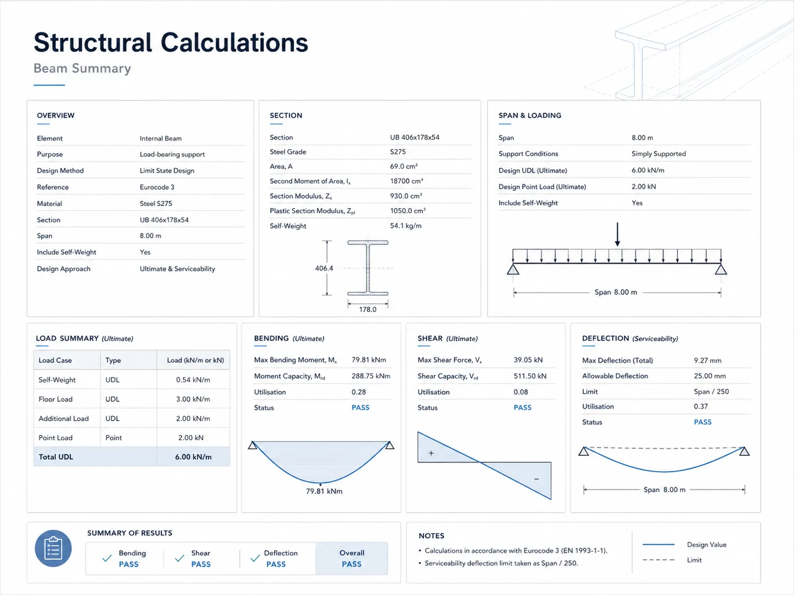
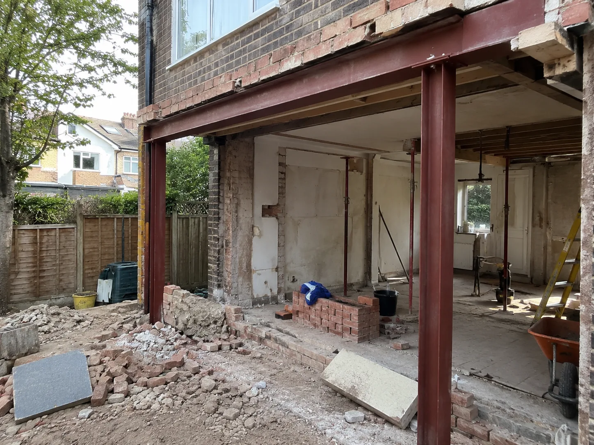

Rear extensions
The classic single-storey rear addition. New beams over the opened-up rear wall, roof structure, and foundations checked for the new loads.
Structural calculations for rear, side-return and wraparound extensions: steel beams, goalpost frames, foundations and Building Control approval across South West London.
Chartered structural engineer support for extensions, working alongside your architect and builder.
Panoptic Design provides structural engineering support for residential and property projects, including calculations for Building Control and builder use.

An extension changes how loads travel through your house: new openings in the rear wall, floors and roofs bearing on new beams, foundations carrying more than before. Our job is the structural package behind your architect’s drawings: beam and padstone calculations, foundation checks, and the documents Building Control and your builder need. Send the drawings if you have them, or just describe the project, and we will tell you exactly what is needed and when a site visit makes sense.
Almost every extension involves new structure carrying old loads. These are the elements Building Control will expect to see justified.
The classic single-storey rear addition. New beams over the opened-up rear wall, roof structure, and foundations checked for the new loads.
Filling in the side return of a Victorian terrace. Usually means steels spanning the return and picking up the existing flank wall, a calculation-heavy little project.
Rear and side combined. More steel, more interfaces with the existing structure, and a structural package that needs coordinating carefully with the architect’s design.
Wide openings for bifold or sliding doors mean big beams, and where the piers get too small, a goalpost frame. We size the steel and check what it lands on.
Every beam needs bearings that work and foundations that can take the load. We check the whole load path, not just the beam.
Calculations and drawings prepared in a format suitable for submission, so approval does not hold up your start date.
If your architect’s drawings say “beam to structural engineer’s design” or your builder has asked for the calcs to price the job, that is exactly what we provide.
The heart of most extension projects: opening the rear wall safely, with steel sized for everything above it.

We scale the work to your project and give practical guidance for homeowners, builders and property professionals. Tell us what you are planning and we will be clear about what is actually needed.
The full structural package for rear, side-return and wraparound extensions: beams, lintels, load paths and foundations.
Beams for bifold and sliding-door openings, and goalpost frames where the remaining piers are too small to brace the wall alone.
Bearings, padstones and foundation checks so every beam lands on something that can carry it. This is the part that is easy to miss and expensive to fix late.
We work from your architect’s drawings and coordinate the structure with their design, so the two packages agree with each other.
Calculations and supporting drawings prepared in a format suitable for Building Control approval, submitted-ready.
General arrangement drawings and beam schedules your builder can price from and build from, without guesswork.
A simple, low-fuss path from first enquiry to the information your builder, architect or Building Control needs. It follows the same measured structural engineering process we use across our projects.
Tell us about the extension
Rear, side-return or wraparound, single or double storey, and your postcode. If you have architect’s drawings, attach or mention them; they are the ideal starting point.
Share drawings, photos or measurements if available
Architect’s plans and elevations are best; photos of the rear of the house and rough measurements also help. If you have nothing yet, that is fine. We will tell you what we need.
We assess the structural scope and whether a visit is needed
We confirm what the package should include (beams, goalposts, foundations) and whether a site visit is needed first, for example to check the existing structure the new steel will bear on.
You receive the package to build from
Calculations, GAs and beam schedules set out clearly for your builder, architect and Building Control, so the project can move forward safely and correctly.
What you receive: a structural package your builder can price from and Building Control can approve.

Panoptic Design helps homeowners, builders and property professionals across South West London, including Putney, Wandsworth, Fulham, Wimbledon, Richmond and Hammersmith.
We also cover the wider London area where suitable. Send your postcode with a short description of the project and we will confirm whether we can help and what the next step looks like.
A measured, practical approach for people who want a structural engineer to confirm the safest way forward, not to be sold more than they need.
Structural calculations and design for extensions: beams, goalpost frames, load paths and foundations, from the first sketch to sign-off.
Real experience with the rear and side-return extensions homeowners and builders take on across London’s period housing stock.
Plain explanations of what the structure needs, what Building Control will ask for, and what your builder should price.
We work alongside homeowners, builders, architects and property professionals so everyone has the information they need.
Our aim is to help your project move forward safely and correctly, with the right calculations and advice at the right time.
From drawings to steel on site: a side-return infill taking shape, exactly as calculated.

If yours is not here, send it via the form or on WhatsApp. We read every enquiry.
Usually, yes. They do different jobs. The architect designs the space: layout, light, planning approval. The structural engineer makes it stand up: sizing the beams, checking the foundations and producing the calculations Building Control requires. Architect’s drawings for an extension typically note “to structural engineer’s design” at every beam. That is the work we take on, in coordination with your architect.
Typically: the beam or beams over the opened rear wall, any beams picking up upper floors or roofs, lintels over new openings, padstones and bearings, and a check that the foundations, new and existing, can carry the loads. Side-returns add steels spanning the return. We confirm the exact scope from your drawings before quoting, so there are no surprises.
Yes. Wide bifold and sliding-door openings are one of the most common things we design: the beam above, the posts or piers each side, and where the piers are too small, a goalpost frame to keep the wall stable. Tell us the rough opening width and what sits above it and we will advise what is involved.
Structural calculations for every new beam and support, usually with a general arrangement drawing showing what goes where. For extensions they will also look at foundations. We prepare the package in a submission-ready format, and if the Building Control officer raises a query, we respond to it. That is part of the job.
Yes. Builders are often the ones who tell homeowners to “get an engineer” in the first place. We produce calculations and beam schedules builders can price from and build from, and we are happy to speak with your builder directly to keep things moving.
It depends on the scope and what you already have. A straightforward rear opening with good drawings is quicker than a wraparound needing a site visit first. We aim to respond to enquiries promptly and will give you a realistic timescale once we understand the project. If you are working to a builder’s start date, tell us, and we will be straight about whether it is achievable.
Yes. Putney, Wandsworth, Fulham, Wimbledon, Richmond, Hammersmith and the wider South West London area are part of our regular coverage, and we cover the wider London area where suitable. Send your postcode with a short description of the project and we will confirm whether we can help.
Unedited Google reviews from the homeowners, architects and contractors we work alongside on residential schemes.
“I run a small architecture studio based in London and Leeds, and in the last couple of years I’ve worked closely with Vijay on a number of different schemes.”
“One of the best experiences we’ve had with a structural engineer. Professionalism, depth of knowledge, and the ability to provide practical solutions. We’ve been in the construction industry for over two decades.”
“Vijay was absolutely amazing and we cannot recommend Panoptic Design more highly. Our previous structural engineer fell ill and Vijay was super responsive to our call, managing a site visit within a few days.”
Three quick steps: the extension, the property, your details. Your answers arrive with the enquiry so we can reply with the right information first time. Prefer to send plans directly? Use WhatsApp.
Prefer to skip the questions? Email info@panopticdesign.co.uk or enquire on WhatsApp.
Best if you already have architect’s drawings, photos or measurements. Add your postcode first, then send them in WhatsApp.
Send your postcode, drawings or photos today and we’ll confirm the right next step.